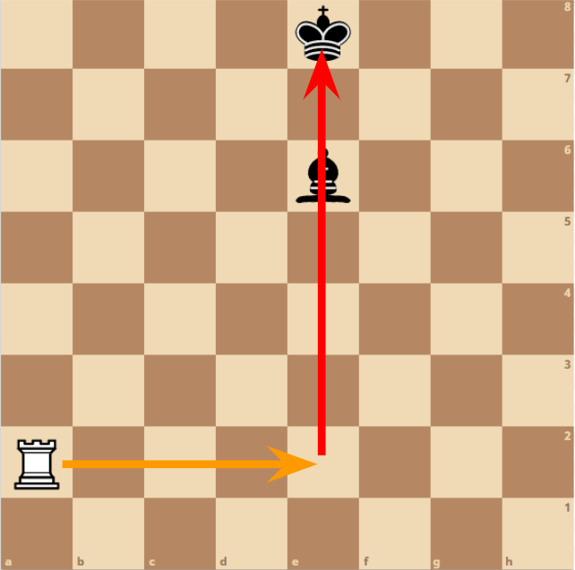
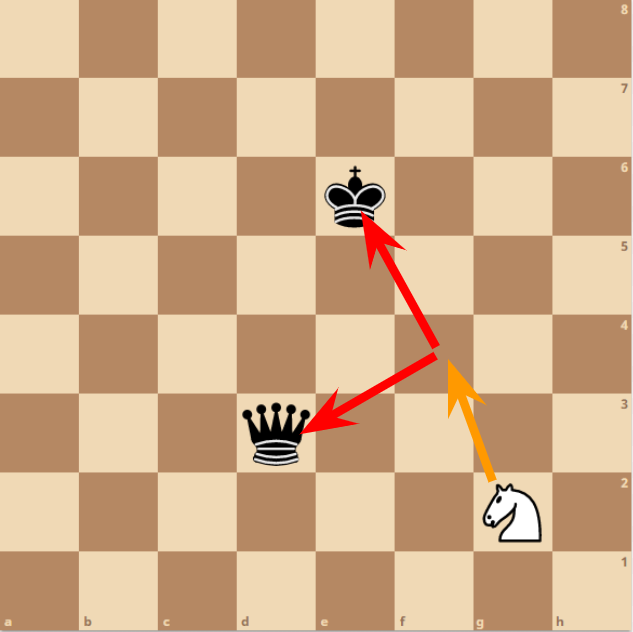
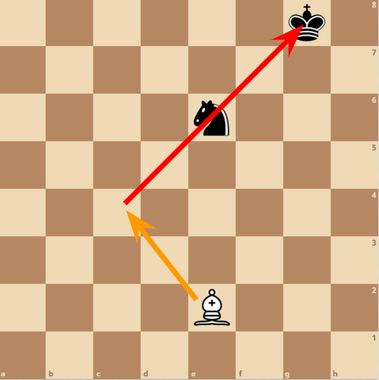
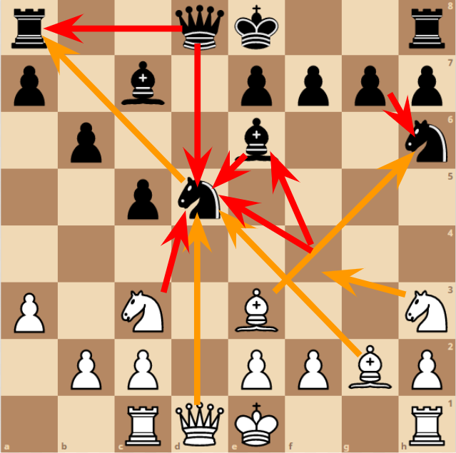

Techniques
There are many ways to play Chess. There are common techniques that players use to gain an advantage over the opponent. The common tactics are pins, fork and skewer. Which can be simple positions of pieces or sequences of pieces. Players can apply the tactics to any games. Recognising certain patterns in Chess can improve players to apply different strategies. By playing more games of Chess, will improve and develop how players becoming more experienced.
Pin
A pin is a tactic that can be used to restrict certain piece or pieces of the opponent. By attacking a piece in front of a valuable piece like a king or a piece that has high value in points. Limits the movement of the opponent's piece in front of a valuaable piece.
- With this example the white rook can move in the placement where the orange arrow is located. Which limits the movement of the black bishop. The red arrows indicates that rook is a threat to the black. If the bishop were to move elsewhere from the position of the white rook then it would be check for the black king.
Fork
A fork is a tactic that consist of one piece attacking two or more pieces at the same time. Creating a threat two both of the opponent pieces. Which the opponent either has to move the king if in check. Or another piece that has more value to the player.
- With this example the white knight can move in the placement where the orange arrow is located. Which is attacking two pieces, the red arrows indicates that the knight is a threat to both the black king and black queen. The opponent needs to choose a piece away from the threat of the white knight.
Skewer
A skewer is a tactic that consist of using one piece that attacks a piece that is protecting a valuable piece. Which makes the opponent needing to move the king if in check or a piece with high value away from the threat, before being captured.
- With this example the white bishop is a threat to both the black knight and the black king. Which is aligned to the king, when the bishop takes the black knight. The black king needs to move away from the threat.
Trading
Trading is important in a game of Chess. No two pieces can occupy the same square. If a piece moves towards another square that is occupied by the opponent piece. That piece is captured then removed from the board. Players should recognise certain position of pieces, which allows them to plan ahead and being prepared. Having more pieces or the placement of certain pieces can gain an advantage over the opponent.
- With this example, the black knight in the centre is a contested spot in this game. With many pieces able to capture the piece in the square. A sequences of movements of pieces are contesting for that square. With many pieces able to recapture each player's pieces.